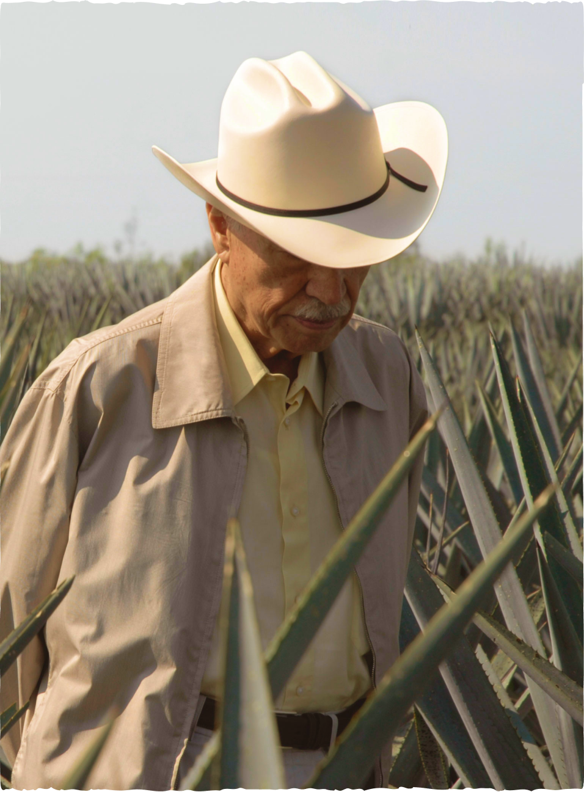
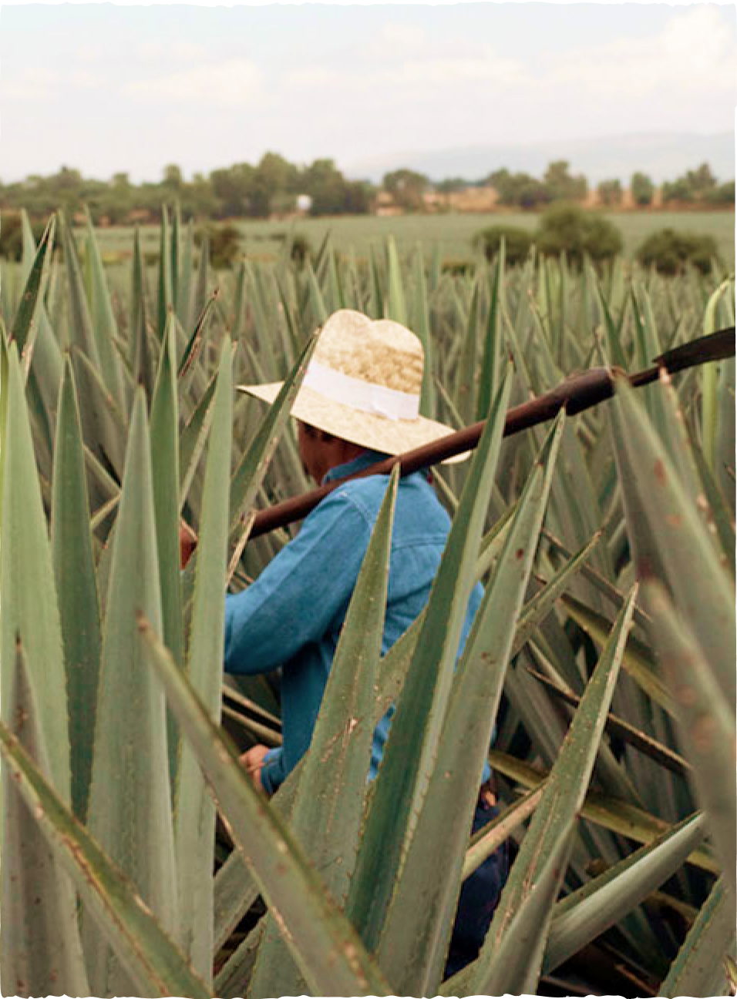
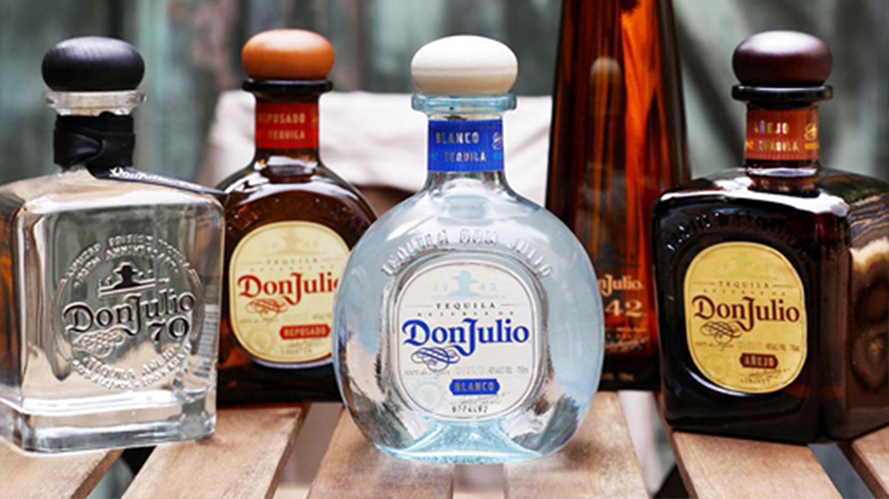

Nuestro fundador
Nuestra historia comenzó en 1942, cuando Don Julio González tuvo la visión de producir su propio Tequila.
No tenía muchos recursos, pero lo que sí tenía era pasión. Así que compartió su visión con un poderoso empresario local y obtuvo un préstamo para crear su primera destilería de tequila.
Fue esta pasión por la excelencia la que inspiró la creación del primer Tequila de lujo a nivel mundial.

Misión
Don Julio González revolucionó el mundo del tequila al priorizar la calidad sobre la cantidad, plantando minuciosamente cada agave en un espacio ideal para crecer y madurar antes de ser cosechados. Seleccionaba solo las porciones más jugosas de la piña, para luego cocinarlas al vapor durante ciclos de 72 horas.
Cuando llegó el momento de embotellar su creación, rompió con generaciones de botellas de tequila tradicionalmente altas, que se escondían por lo general debajo de las mesas. Sabía que su nuevo licor no tenía por qué esconderse en el suelo, por lo que diseñó una botella de tequila más baja, para que sus invitados pudieran pasársela en la mesa y que eso no les impidiera verse entre sí.

Su historia
-
1925. Nace Don Julio Gonzales
-
1942. Inicia nuestra aventura. Don Julio produce su primer Tequila a la edad de 17 años.
-
1947. Nuestra hermosa destilería, “La Primavera”, es construida.
-
1987. El tequila se bautiza con la marca “Don Julio”
-
1995-1996. Se crean las clases Blanco, Añejo y Real
-
2002. Se crea Don Julio 1942
-
2012. Se lanza el primer tequila Cristalino a nivel mundial
